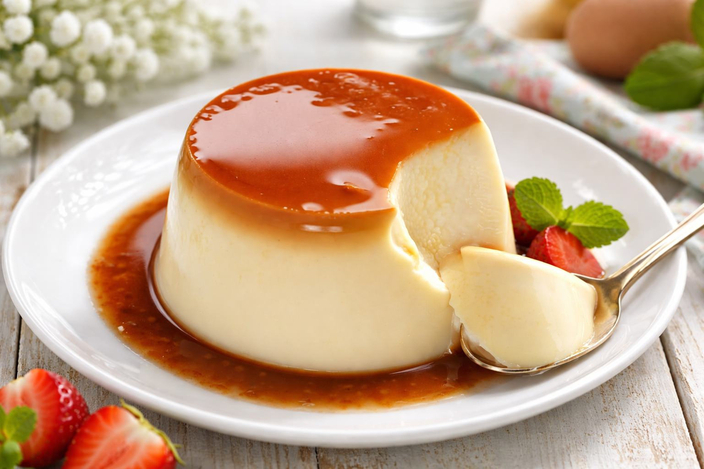

Flan

Description
The classic recipe that holds a special place in the hearts of Brazilians!
It only requires condensed milk, milk, eggs, and sugar. However, it demands patience (but it's definitely worth it!). To adapt it to a smooth or porous version, simply pay attention to incorporating air into the mixture.
Ingredients
- 1 can of condensed milk
- 1 can of milk (same as the condensed milk)
- 3 eggs
- 1 cup of sugar
- 1/2 cup of water
Steps
- Beat the eggs in the blender (If you want to avoid incorporating air, gently tap by hand.).
- Mix the condensed milk and the milk with the eggs and beat it, again.
- Melt the sugar in the flan tin.
- Add water and let it thicken.
- When it's cool, pour the pudding mixture over it.
- Place the tin in a backing pan filled with water.
- Bake in 180°C or 356°F for about 45 min.
- With a fork, check if it's cooked through.
- Take to the refrigerator before turning it out of the flan tin.